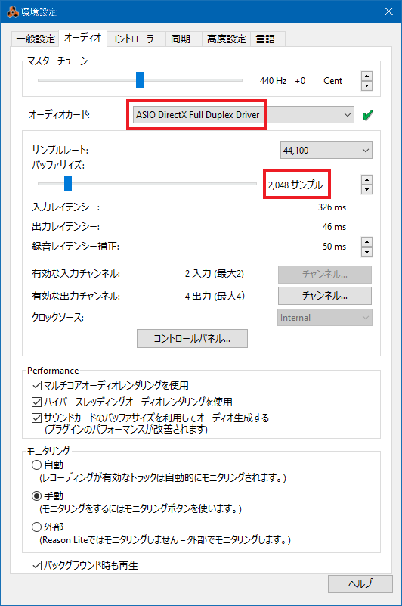
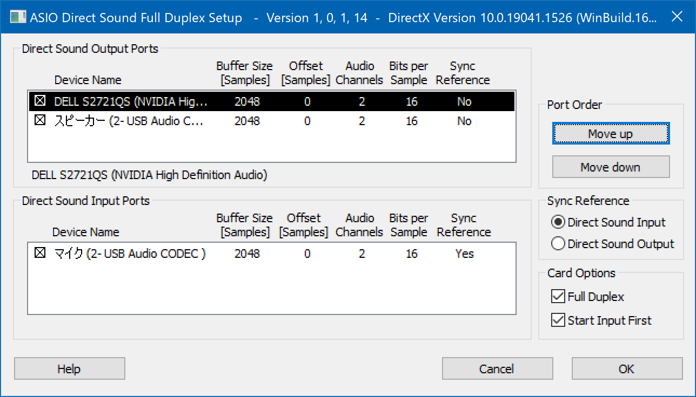
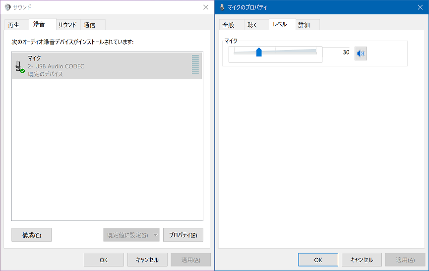
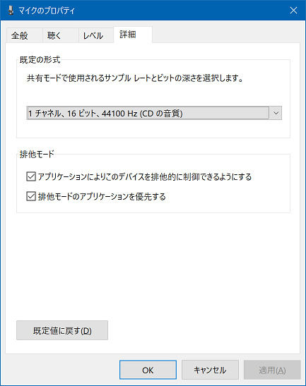
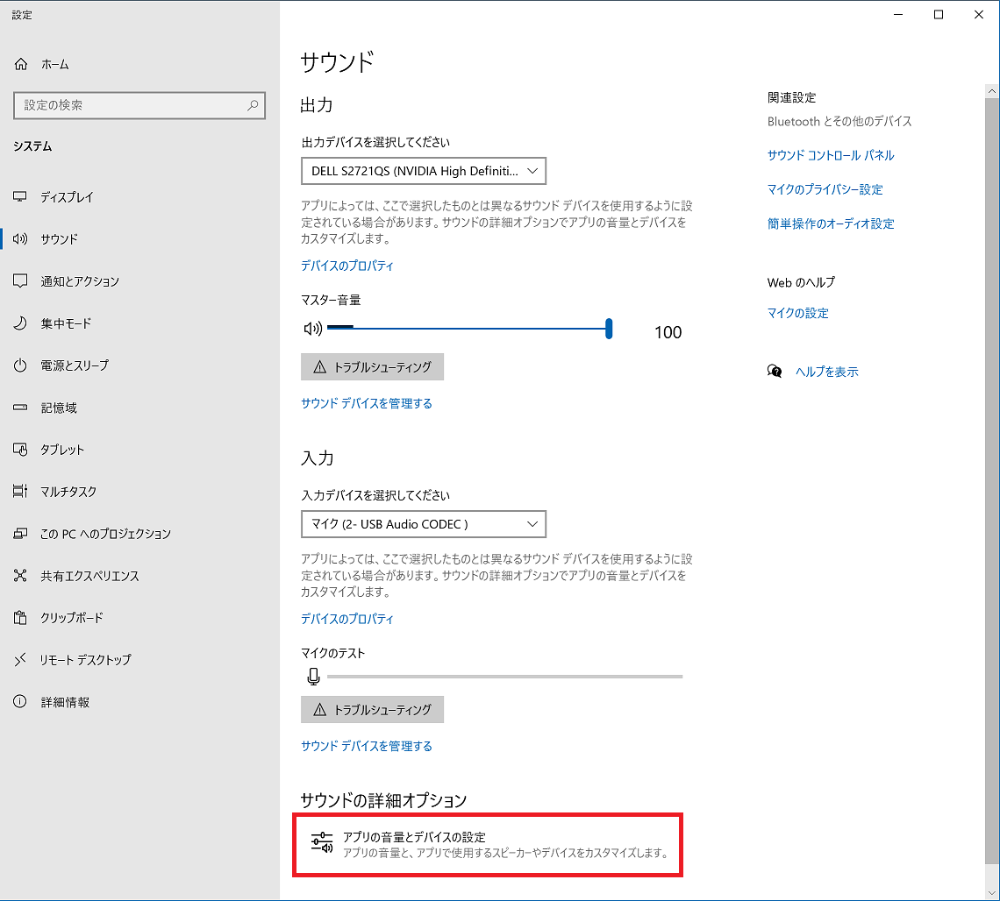
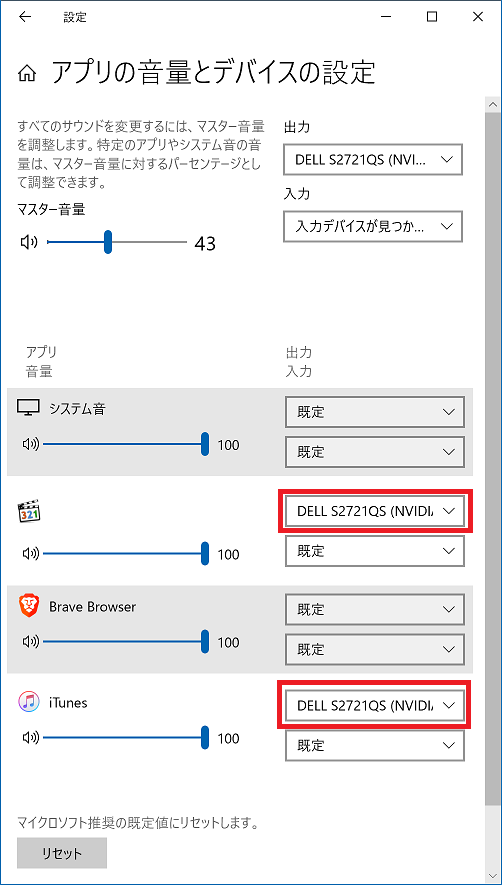

Zoom G2.1Nu のオーディオインターフェース機能と Reason Lite 10 との接続周りのメモ
以前、Zoom G2.1Nu というギター用のマルチエフェクターを、USB でパソコンに接続し、Reason Lite 10 という DAW で録音する、という環境を整えた。
上の過去記事でも、接続方法と Reason Lite での設定方法をまとめたのだが、久々に触ったらワケ分かんないことになったので設定をやり直したのと、いくつかの問題に関するメモをまとめておく。


目次
- 環境情報
- iTunes で音楽を流しながら Reason Lite の音も両方スピーカーから出したい
- ギターの音が DAW に取り込めなくなった
- ASIO4ALL をインストールする
- レイテンシなく PC・ギターの音を両方同時に聴きたいが…
- Windows のサウンド設定でギターの録音音量を調整する
- iTunes の音は必ず PC スピーカーから流したい、そんな時は
- Zoom G2.1Nu の音がノイジー…
- 音楽機材はすーぐ高いの欲しくなる、でも理由はハッキリしている
環境情報
ハードウェア的には、上述のとおり Zoom G2.1Nu → USB ケーブル → パソコン、と接続している。Zoom G2.1Nu のオーディオインターフェース機能を利用しているワケだ。
パソコンの OS は Windows10 Pro。Reason Lite 10 という DAW は、Korg microKEY Air-49 という MIDI キーボードに同梱されていた。Zoom G2.1Nu には Cubase LE が同梱されていたが、自分はコチラは使っていない。


iTunes で音楽を流しながら Reason Lite の音も両方スピーカーから出したい
過去記事にも書いたが、Reason Lite で「ASIO Generic Low Latency ASIO Driver」というオーディオカードを選択しておくことで、ギターでも MIDI キーボードでも、低遅延で録音・入力できるようにしていたのだが、この設定は一つ問題があって、Reason Lite を起動している最中は他のソフトから一切音が流れなくなってしまう、ということだった。
Chrome ブラウザで YouTube 動画を流しながらとか、iTunes で MP3 を流しながら、Reason Lite も開いて、MIDI キーボードで音を打ち込んでみたり、Zoom G2.1Nu 経由で繋いだギターの音をモニタアウトしてみたり、そういうことがしたかったのだが、コレができなかった。
Reason Lite を起動している最中も、Chrome ブラウザや iTunes など別のソフトからの音は出力したい、ということで、そのやり方を調べていた。
ギターの音が DAW に取り込めなくなった
そんなワケで、Reason Lite の「環境設定」画面で「オーディオカード」か「コントロールパネル」のどこかをイジくり回していたら、何やらエラーメッセージが出て、それまで選択していた「ASIO Generic Low Latency ASIO Driver」というオーディオカードが選択できなくなってしまった。後述するスクリーンショットで緑色のチェックマークが付いているところに、赤いバツ印が付くようになり、コレが解消できなくなってしまった。
元はといえば「ASIO Generic Low Latency ASIO Driver」を使えるようにした当初も何やかんや設定をしたと思うのだが、記録を残していなくてイマイチ忘れてしまっていた。そこで、また違うやり方を調べてみた。
ASIO4ALL をインストールする
色々調べて、一番参考になったのは以下の Reddit。
ココを参考に、まずは ASIO4ALL というフリーソフトを入れてみる。ASIO ドライバがない環境で、ASIO ドライバの代わりをしてくれるフリーソフトとのこと。自分は今まで ASIO ドライバを使えていたと思うのだが、何をイジくったのか使えなくなってしまったワケで、しょうがない、コレを入れて何か変わるか試してみよう。
↑ このページに行き、「16 FEBRUARY 2022: FINALLY – VERSION 2.15 (FINAL!)」の「ASIO4ALL 2.15 – Japanese」(ASIO4ALL_2_15_JPN.exe) をダウンロード、インストールしてみた。
すると、Reason Lite の「環境設定」画面で、いくつかの ASIO オーディオカードが選択できるようになっていた。

試行錯誤の末、自分は次のように設定するとうまくいくことが分かった。
- オーディオカード : 「ASIO DirectX Full Duplex Driver」を選択する
- このオーディオカードだと、iTunes から音を出しながら DAW も使う、というやりたかったことが実現できる
- 「ASIO ASIO4ALL v2」「ASIO Generic Low Latency ASIO Driver」の2つは、ちゃんと音は出るし、より低レイテンシに設定ができるが、iTunes などからの音がどうやっても出せないので除外する
- バッファサイズ : 「2,048 サンプル」にする
- 選択できる最小のサイズは 512 サンプルだったが、コレを選択するとギターの音がプツプツ途切れてしまう
- レイテンシは0.5秒くらいと酷いものだが、ギター音がちゃんと録音できるのはこのぐらいのバッファサイズでないとダメだった
- MIDI キーボードのレイテンシは特になかったので、この設定のままとする
オーディオインターフェースや DAW の基礎知識の範疇ではあるのだが、改めて学んだので以下にメモしておく。
- 「サンプルレート」と表記があったら 44,100Hz (44.1kHz) を選ぶ
- 48,000Hz (48.0kHz) は選ばない
- 周波数が低い方がレイテンシ (遅延) が少なくなる他、ノイズがしたり音質が悪いと感じた場合は、サンプルレートを 44,100Hz にすることで解消することがある
- 「バッファサイズ」は、パソコンの CPU スペックなどに依存するので、なるべく小さい値で、音質に問題がない値を探る
- 小さいサンプル数にすると低遅延になるが、音飛びやノイズが発生する場合がある
- サンプル数を増やしていくと遅延が大きくなるが、音質は良くなる
ついでに「コントロールパネル」ボタンを押したところの設定画面は、こんな感じになっている。

- Direct Sound Output Ports : 僕の環境では、「Dell S2721QS (NVIDIA High Definition Audio)」を選ぶと、PC のスピーカーから音が出る
- 「スピーカー (2-USB Audio CODEC)」にもチェックを入れておくと、Zoom G2.1Nu に音を送り返せるようだ
- Direct Sound Input Ports : 「マイク (2-USB Audio CODEC)」を選ぶと、Zoom G2.1Nu を経由してギター音が録音できるようになる
- その他の設定は特にイジっていないがスクショのとおり
以前「ASIO Generic Low Latency ASIO Driver」を使っていた時は、バッファサイズを最小まで小さくしていたのだが、どうも音質が悪いし、音がプツプツ途切れるな～と思っていた。よくよく調べたらこういうことだった。
今回選択した「ASIO DirectX Full Duplex Driver」では、バッファサイズを増やすことでプツプツ途切れる事象は回避したが、代わりにギターの音が0.5～1秒近く遅れて聞こえる、レイテンシはかなり増大してしまった。
レイテンシなく PC・ギターの音を両方同時に聴きたいが…
アナログの音声電気信号をデジタルに変換するというのは、2022年になっても相当難しいことで、どうしてもレイテンシ (楽器を弾いてから実際にスピーカーから音が流れるまでの遅延・ラグ) が発生してしまうモノなのだ。プロが使うような高級な DAW だとしても、レイテンシはゼロにはならないという。
自分は PC のスピーカーから、iTunes などのソフトの音、DAW 上の打ち込みの音、そして弾いているギターの音の全てが同時に再生できたらいいなーと思っていたのだが、ギター音のレイテンシが気になって全く上手く弾けなくて苦労していた。しかし、「PC からギター音を流そう」とすると、ギター音は絶対に遅延してしまう。レイテンシなく、PC からギターの音を聴くのは無理なのだ。
だから、Zoom G2.1Nu の「Output 端子」にヘッドホン等を挿して、ギター音はそちらで聞くのが、遅延なくモニターするためのセオリーではあるのだが、そうなると、
- PC 上の音は PC に繋いだスピーカーから
- ギター音は Zoom G2.1Nu に繋いだヘッドホンから
別々に再生されることになり、コレはコレで両方の音を聞きづらい。僕は賃貸住まいなのでアンプで音を鳴らすワケにもいかないのだ。
それでは発想を転換して、Zoom G2.1Nu めがけて PC の音を送れたら、PC 音・ギター音の両方が Zoom G2.1Nu に繋いだヘッドホンで聞けるのではないか？と考えた。
パソコンには 3.5mm の AUX OUT 端子があるので、ココから音を出力できるかも？と考えたのだが、Zoom G2.1Nu の方に AUX IN 端子がない。
もう少し調べてみると、USB 接続した Zoom G2.1Nu が、Windows 上では「再生デバイス」として認識されるので、USB を経由して DAW の音を聞いたりはできるようだ。
原理的にいえば、今度は「パソコン上で音を出す操作をしてから、Zoom G2.1Nu に繋いだヘッドホンから音が出力されるまでの間にレイテンシが発生する」ことになると思うのだが、PC 操作側で多少のレイテンシがあっても気になることはないだろう。
というワケで、Zoom G2.1Nu の「Output 端子」から、PC の音を聴くというのが、ギター音のレイテンシをなくしつつ、PC 音を同時に聴く最適解だと思われる。
Windows のサウンド設定でギターの録音音量を調整する
さて、Reason Lite 上のオーディオカードの設定は以上のとおりなのだが、いざギターの音を録音しようと思った時に、Windows OS 上のサウンド設定が必要だったのでその話もメモしておく。
Windows10 の「PC 設定」と「コントロールパネル」の分離、いい加減どうにかならないかな…。音声関連の設定がいつも面倒臭い。
「サウンド」ウィンドウを開いたら、「録音」タブ → 「マイク 2-USB Audio CODEC」を選択し、「プロパティ」ボタンを押下する。
ココで、「レベル」を調整しておく。

僕が試した限りだと、マイクレベルは 30～50 くらいまでで調整しておくと良い。それ以上にすると音量がデカすぎてしまう。
音量がデカい状態で Reason Lite で録音すると、波形が大きな黒つぶれした長方形になってしまい、ゴリゴリにゲインが効いた音になってしまう。コンデンサマイクの接続の時によくやる、いわゆる「ピーク超えしないように」の調整が、この部分である。
ついでに「詳細」タブでは「1 チャネル、16 ビット、44100 Hz (CD の音質)」を選択してあるか確認しておこう。素のままだと「DVD 音質」の 48000 Hz が選択されている場合がある。

iTunes の音は必ず PC スピーカーから流したい、そんな時は
先程、PC の音も Zoom G2.1Nu の「Output 端子」で聞けばいいんじゃない？と書いたが、現状自分の環境ではちょっとやりづらいところもあったので、PC で流れる音は必ず PC のスピーカーから流すと決めた。
前述の Reddit でもこのための設定方法が紹介されていたのだが、次のとおり。
- PC 設定 → システム → サウンド と進む
- 出力 : 僕の環境では、PC スピーカーである「Dell S2721QS (NVIDIA High Definition Audio)」が選ばれている状態にする
- 入力 : Zoom G2.1Nu のオーディオインターフェースである「マイク (2-USB Audio CODEC)」を選んでおく

そしてココからが重要で、画面下部にある「サウンドの詳細オプション」→「アプリの音量とデバイスの設定」に進むと、アプリ単位で使用する入出力デバイスを明示的に選択できるのだ。

自分がよく使う音楽アプリである iTunes、MPC などは、出力で「Dell S2721QS (NVIDIA High Definition Audio)」を明示的に選んでおくと、間違いなく PC スピーカーから音が出るようになる。
Zoom G2.1Nu の音がノイジー…
PC 上ですべき設定は以上。コレでギター音の録音などはまたできるようになった。
ただ、なんというか、ココまで頑張ってきてアレなんだけど、そもそもの Zoom G2.1Nu の音が悪いとしか思えなくなってきていてツラい。
当初自分は Boss のコンパクトを買い漁っていたが、Zoom G2.1Nu を買った当時は「いよいよこのマルチ1台でやっていけそうだ！」と思ったものだった。しかし、その後 Mooer にハマり、Mooer を多数並べたエフェクターボードを作っていた時期が長かったためか、もう少しアナログ寄りな音に耳が慣れていたようだ。
ギターの歪みでよく「デジタル臭い音」と表現される音があるが、僕は当時あんまりその意味が理解できていなかった。色々試してきた結果、一般によく「デジタル臭い歪み」というのは、この Zoom G2.1Nu が出す音そのものではなかろうか、と思ってきた。すなわち、
- 小さい音を無理矢理引き上げたような、特に高音域が耳障りなホワイトノイズ、ヒスノイズが目立つ
- さほどゲインを上げていないのに、グリッサンドやちょっとした指板の動きによるノイズがかなり大きく鳴る
- ギター本体のボリュームを絞っても歪み量が変わらない。入力ゲインに対する追従性が悪い
- ヘッドホン、スピーカーのどちらで聞いているにも関わらず、音の広がり感が少ない、ヌケ感がどうやっても出ない
こうした特徴の音なのかな、と。
「デジタル臭い」っていう表現自体がそもそも不適切だとは思うんだけど、要するに生のアンプで歪みを作った時のような気持ち良い音がどうやっても出せない状態が、デジタル臭い、チープな音ってことなのかなーと思う。んで、Zoom G2.1Nu の出す音はまさにそういう感じ、と。
特に Zoom G2.1Nu は、歪みを作っていくとすぐにノイズ感が増し、ノイズリダクションをどう組み合わせてもそれが消せない。チョーキング時の弦のこすれや、グリッサンドのような余計な音まで増幅されてしまうのを避けられないのだ。普通にギターアンプで鳴らすと絶対にこんなことにはならないのに、Zoom G2.1Nu で歪みを作るとどうやってもこういう音になってしまう。
「エフェクターの使い方が悪いだけだ」とか言われるかもしれないが、Boss コンや Mooer でこんな困り方したことないのを思うと、「超シビアに使わないと良い音が出せない機材は劣っている」と評価しちゃうよね。自分の使い方が悪い、でいいけど、もっと良い音が簡単に出せる機材あるし、っていう。
2010年発売の安価なマルチエフェクターなので、品質を求めるモンじゃない、といいつつ、最近は機材をほとんど売り払ってしまい、Zoom G2.1Nu でしか音を出せない状況なので、どうしても音の悪さが気になってしまうのだ。
ちなみに、USB バス駆動だから音が悪いのか？と思ったが、AC 電源を繋いでも繋がなくても音に違いはなかった。他に、近辺のパソコンがノイズを増幅させているのか？とか、違う壁のコンセントならどうか、とか色々条件は比較したが、どれも変わらず。Zoom G2.1Nu の音がコレなのだ、と結論づけた。
音楽機材はすーぐ高いの欲しくなる、でも理由はハッキリしている
以前 USB ヘッドセットを買った時にも思ったのだが、音声や音楽は未だ、アナログとデジタルの変換部分がキモなのだ。
オーディオインターフェースしかり、デジタル回路で歪みを作るマルチエフェクターの心臓部分しかり、アナログとデジタルの変換部分の質が悪いと、すぐ音質が悪くなったり、ノイズが増えたりしてどうにもならなくなる。
ギターなんて頻繁に弾かないし、ましてやプロでもない。高音質なマイクなんて買ったところで、己の滑舌が一番のノイズでは…と思ったりもするが、それでも、質の悪い音、ノイズの多い音をずっと聞かされているとイライラして仕方ない。
そんなワケで、自分の耳で判断して、まともな機材が欲しくなっていくのだが、まともな機材というのはやはりお値段が高い。つらい。ｗ